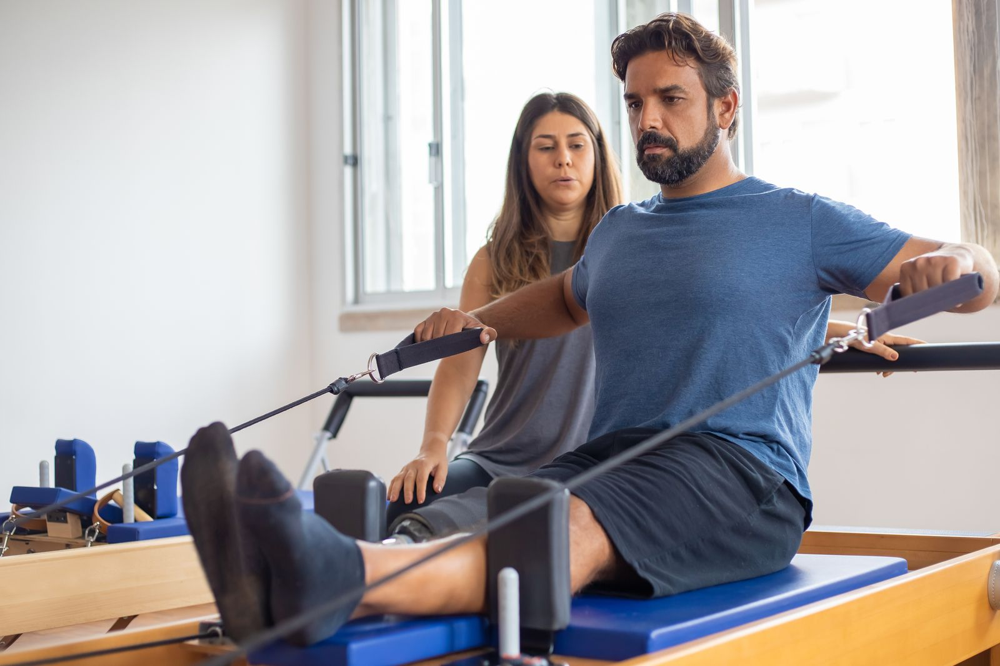
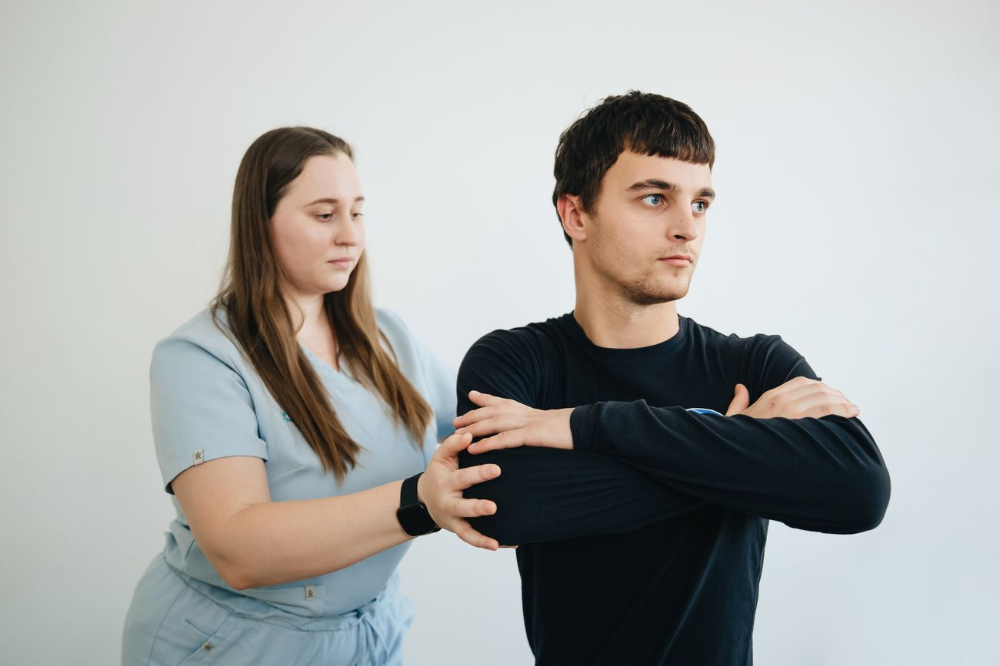
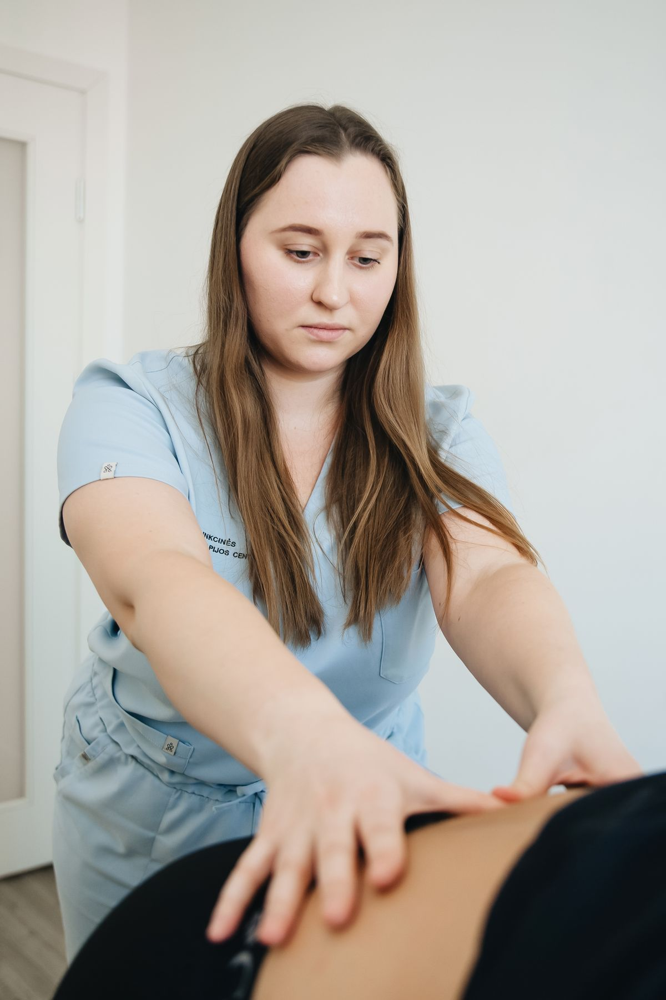
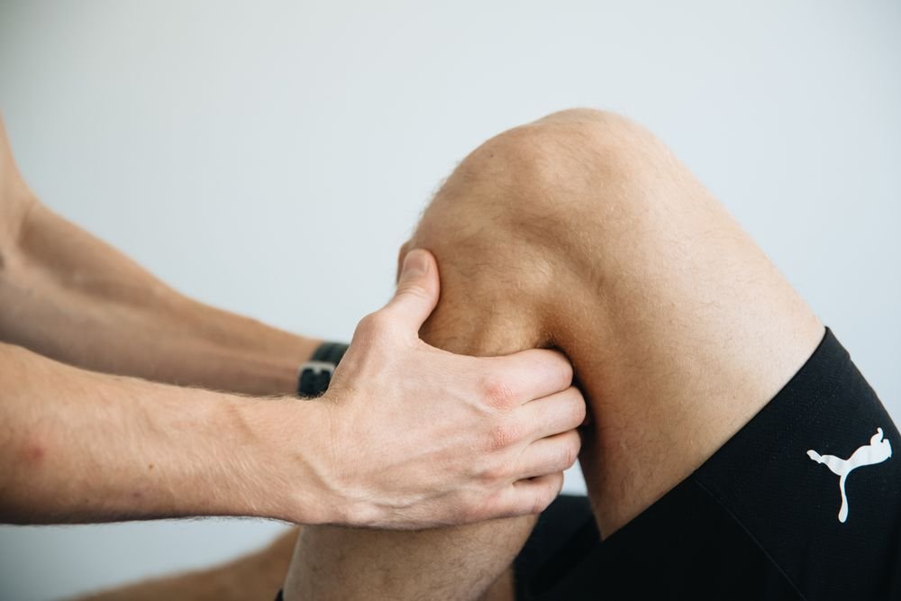
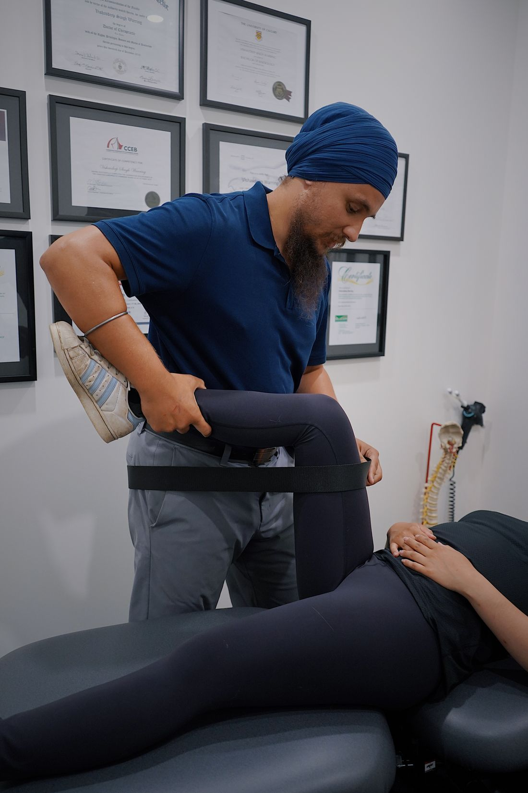
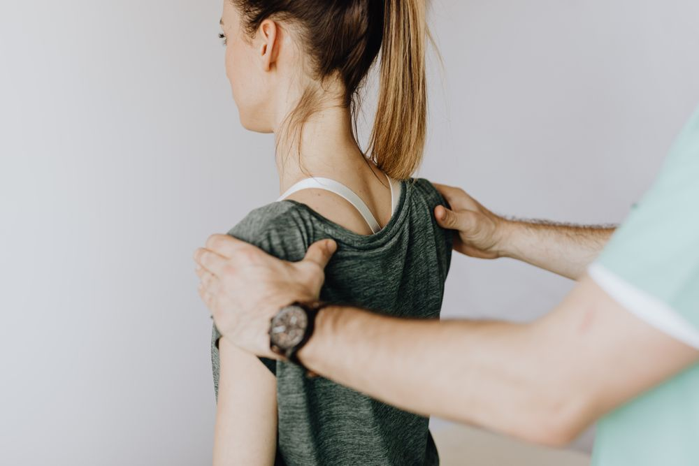

01 / Care pathway
Sports injury rehabilitation
Find a considered path back to the activities you enjoy.
Explore careThoughtful physiotherapy and rehabilitation support for everyday movement, recovery and returning to the activities that matter.

Whether it’s an everyday concern or a return to activity, explore a care pathway that fits your conversation.

Find a considered path back to the activities you enjoy.
Explore care
Supported movement for the next chapter of your recovery.
Explore care
Care that considers the way you live, work and move.
Explore careChoose an area to explore general information and find a starting point for your assessment.

Care begins with a conversation.Discuss comfortable movement, strength and everyday activities with a physiotherapist. An assessment helps establish your next steps.
Explore knee careA thoughtful rhythm of assessment, support and review. Your individual plan can change as your needs do.
Space to listen and understand.
Goals agreed together.
Guidance at an appropriate pace.
Your clinician’s plan, within reach.
Reflect, adapt and look ahead.
Talk through your concerns, daily routine and the things you want to get back to.
Explore appropriate options, ask questions and agree on a way forward together.
Keep the conversation open as your clinician reviews your needs and goals.
Your clinician’s guidance doesn’t have to get lost between sessions. Keep assigned activities and your completion history close at hand.
Explore exercise supportFollow activities assigned by your clinician and keep track of your own check-ins.
Good care makes room for your questions. Explore our care focuses and share what you’re looking for in a therapist.
Meet your care options

Listening. Guiding. Reviewing together.Session requests, assigned exercises, care history and available receipts. One organized place for your next steps.
Open Patient PortalBrowser-based access is available. Clinic services require a connected provider.Start with a conversation about what matters to you.